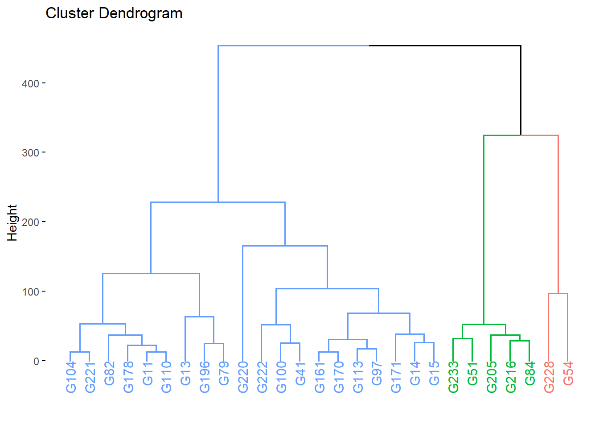
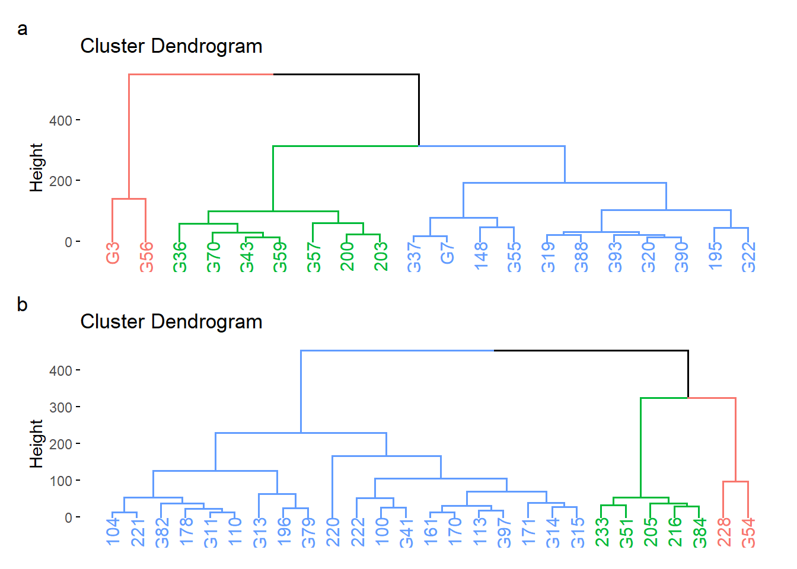
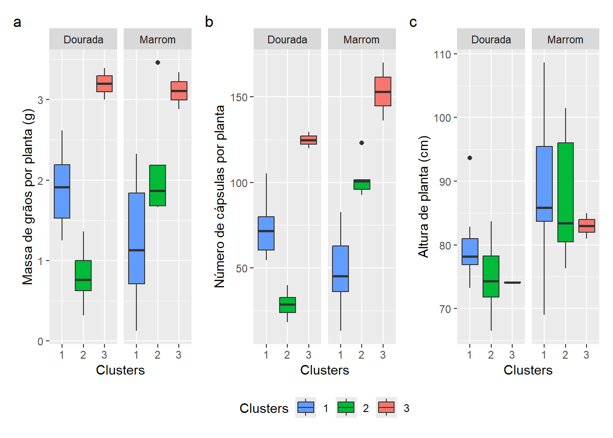
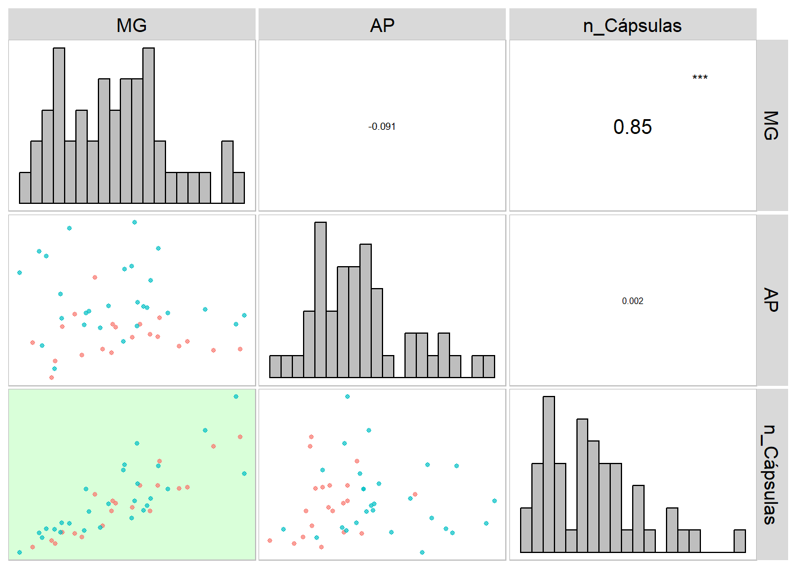

01: Diversidade genética em genótipos de linho (Linum usitatissimum, L.) cultivados em Florianópolis-SC
1 Pacotes
2 Analisar as imagens
img <- image_import("imgs/cápsulas/36_Cápsulas_1_2023-12-19-03-12-31.jpg")
plot(img)
image_segment(img, index = "GRAY")
res <-
analyze_objects(pattern = "Cáp",
dir_original = "imgs/cápsulas",
filter = 3,
marker = "point",
reference = TRUE,
reference_larger = TRUE,
reference_area = 3,
parallel = FALSE,
workers = 3,
plot = FALSE,
index = "GRAY")
df <-
get_measures(res)$results |>
separate_wider_delim(img, delim = "_", names = "INDIVIDUO", too_many = "drop")3 Dados
df <- import("data/data_raw.csv")
dfplan <- import("data/data_lab.xlsx")
dfmean <-
df |>
group_by(INDIVIDUO, TIPO) |>
summarise(n = n(),
diam = mean(diam_mean, na.rm = TRUE),
area = mean(area, na.rm = TRUE),
perimeter = mean(perimeter, na.rm = TRUE),
caliper = mean(caliper, na.rm = TRUE)) |>
pivot_wider(names_from = TIPO,
values_from = c(n, diam, area, perimeter, caliper))
dfan <-
left_join(dfmean, dfplan) |>
remove_rows_na() |>
mean_by(GEN, TIPO)4 Matriz de distâncias
5 Douradas
marrom <-
dfan |>
filter(TIPO == "MARROM") |>
select(-c(INDIVIDUO, ROW, COL, PLOT, TIPO)) |>
column_to_rownames("GEN")
dist_marrom <- clustering(marrom, nclust = 3)
dist_marrom$cophenetic
## [1] 0.7540819
dendma <-
fviz_dend(dist_marrom$hc, k = 3,
k_colors = c("#619CFF", "#00BA38", "#F8766D" ),
label_cols = c(rep("#619CFF", 20),
rep("#00BA38", 5),
rep("#F8766D", 2)))
dendma
6 Douradas
6.1 Distâncias
dourada <-
dfan |>
filter(TIPO == "DOURADA") |>
select(-c(INDIVIDUO, ROW, COL, PLOT, TIPO)) |>
column_to_rownames("GEN")
dist_dourada <- metan::clustering(dourada, nclust = 3)
denddo <- fviz_dend(dist_dourada$hc, k = 3)
arrange_ggplot(denddo, dendma,
ncol = 1,
tag_levels = "a")
ggsave("figs/dendrograma.jpg",
height = 6.5,
width = 7)6.2 Médias
dfplot <-
bind_rows(
dist_dourada$data |> mutate(tipo = "Dourada"),
dist_marrom$data |> mutate(tipo = "Marrom")
) |>
rownames_to_column("Genótipo") |>
metan::as_factor(groups)
mg <-
ggplot(dfplot, aes(groups, MG, fill = groups)) +
geom_boxplot() +
facet_wrap(~tipo) +
labs(x = "Clusters",
y = "Massa de grãos por planta (g)",
fill = "Clusters")+
scale_fill_manual(values =c("#619CFF", "#00BA38", "#F8766D"))
nc <-
ggplot(dfplot, aes(groups, n_Cápsulas, fill = groups)) +
geom_boxplot() +
facet_wrap(~tipo) +
labs(x = "Clusters",
y = "Número de cápsulas por planta",
fill = "Clusters")+
scale_fill_manual(values =c("#619CFF", "#00BA38", "#F8766D"))
ap <-
ggplot(dfplot, aes(groups, AP, fill = groups)) +
geom_boxplot() +
facet_wrap(~tipo) +
labs(x = "Clusters",
y = "Altura de planta (cm)",
fill = "Clusters")+
scale_fill_manual(values =c("#619CFF", "#00BA38", "#F8766D"))
arrange_ggplot(mg, nc, ap,
tag_levels = "a",
guides = "collect")
ggsave("figs/medias_divergencia.jpg",
width = 6,
height = 4)
# correlação
corr_plot(dfplot, MG, AP, n_Cápsulas,
col.by = tipo)
ggsave("figs/correlacao_divergencia.jpg",
width = 6,
height = 4)7 Section info
sessionInfo()
## R version 4.3.3 (2024-02-29 ucrt)
## Platform: x86_64-w64-mingw32/x64 (64-bit)
## Running under: Windows 11 x64 (build 22631)
##
## Matrix products: default
##
##
## locale:
## [1] LC_COLLATE=Portuguese_Brazil.utf8 LC_CTYPE=Portuguese_Brazil.utf8
## [3] LC_MONETARY=Portuguese_Brazil.utf8 LC_NUMERIC=C
## [5] LC_TIME=Portuguese_Brazil.utf8
##
## time zone: America/Sao_Paulo
## tzcode source: internal
##
## attached base packages:
## [1] stats graphics grDevices utils datasets methods base
##
## other attached packages:
## [1] pliman_2.1.0.9000 DescTools_0.99.54 metan_1.18.0 caret_6.0-94
## [5] lattice_0.22-6 factoextra_1.0.7 lubridate_1.9.3 forcats_1.0.0
## [9] stringr_1.5.1 dplyr_1.1.4 purrr_1.0.2 readr_2.1.5
## [13] tidyr_1.3.1 tibble_3.2.1 ggplot2_3.5.1 tidyverse_2.0.0
## [17] rio_1.1.0
##
## loaded via a namespace (and not attached):
## [1] splines_4.3.3 later_1.3.2 bitops_1.0-7
## [4] R.oo_1.26.0 cellranger_1.1.0 polyclip_1.10-6
## [7] hardhat_1.3.1 pROC_1.18.5 rpart_4.1.23
## [10] lifecycle_1.0.4 sf_1.0-16 rstatix_0.7.2
## [13] globals_0.16.3 MASS_7.3-60.0.1 crosstalk_1.2.1
## [16] exactextractr_0.10.0 dendextend_1.17.1 backports_1.5.0
## [19] magrittr_2.0.3 rmarkdown_2.27 yaml_2.3.8
## [22] httpuv_1.6.15 sp_2.1-3 gld_2.6.6
## [25] DBI_1.2.2 minqa_1.2.7 RColorBrewer_1.1-3
## [28] abind_1.4-5 expm_0.999-9 R.utils_2.12.3
## [31] BiocGenerics_0.46.0 RCurl_1.98-1.14 nnet_7.3-19
## [34] tweenr_2.0.3 ipred_0.9-14 satellite_1.0.5
## [37] lava_1.8.0 ggrepel_0.9.5 listenv_0.9.1
## [40] terra_1.7-78 units_0.8-5 parallelly_1.37.1
## [43] codetools_0.2-20 ggforce_0.4.2 tidyselect_1.2.1
## [46] raster_3.6-26 farver_2.1.2 lme4_1.1-35.3
## [49] viridis_0.6.5 stats4_4.3.3 base64enc_0.1-3
## [52] mathjaxr_1.6-0 jsonlite_1.8.8 e1071_1.7-14
## [55] survival_3.6-4 iterators_1.0.14 systemfonts_1.1.0
## [58] foreach_1.5.2 tools_4.3.3 ragg_1.3.2
## [61] Rcpp_1.0.12 glue_1.7.0 prodlim_2023.08.28
## [64] gridExtra_2.3 xfun_0.44 EBImage_4.42.0
## [67] withr_3.0.0 numDeriv_2016.8-1.1 fastmap_1.1.1
## [70] GGally_2.2.1 boot_1.3-30 fansi_1.0.6
## [73] digest_0.6.35 mapedit_0.6.0 timechange_0.3.0
## [76] R6_2.5.1 mime_0.12 textshaping_0.4.0
## [79] colorspace_2.1-0 jpeg_0.1-10 R.methodsS3_1.8.2
## [82] utf8_1.2.4 generics_0.1.3 data.table_1.15.4
## [85] recipes_1.0.10 class_7.3-22 httr_1.4.7
## [88] htmlwidgets_1.6.4 ggstats_0.6.0 ModelMetrics_1.2.2.2
## [91] pkgconfig_2.0.3 gtable_0.3.5 Exact_3.2
## [94] timeDate_4032.109 htmltools_0.5.8 carData_3.0-5
## [97] fftwtools_0.9-11 scales_1.3.0 lmom_3.0
## [100] png_0.1-8 gower_1.0.1 knitr_1.46
## [103] rstudioapi_0.16.0 tzdb_0.4.0 reshape2_1.4.4
## [106] nlme_3.1-164 nloptr_2.0.3 proxy_0.4-27
## [109] rootSolve_1.8.2.4 KernSmooth_2.23-24 parallel_4.3.3
## [112] pillar_1.9.0 grid_4.3.3 vctrs_0.6.5
## [115] promises_1.2.1 ggpubr_0.6.0 mapview_2.11.2
## [118] car_3.1-2 xtable_1.8-4 evaluate_0.23
## [121] mvtnorm_1.2-5 cli_3.6.1 locfit_1.5-9.9
## [124] compiler_4.3.3 rlang_1.1.3 future.apply_1.11.2
## [127] ggsignif_0.6.4 labeling_0.4.3 classInt_0.4-10
## [130] plyr_1.8.9 stringi_1.8.3 viridisLite_0.4.2
## [133] lmerTest_3.1-3 munsell_0.5.1 leaflet_2.2.2
## [136] tiff_0.1-12 Matrix_1.6-5 hms_1.1.3
## [139] patchwork_1.2.0 leafem_0.2.3 future_1.33.2
## [142] shiny_1.8.1.1 broom_1.0.6 readxl_1.4.3